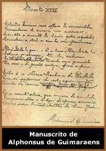

Afonso Henrique da Costa Guimarães
nasceu em 24 de julho de 1870, na cidade de Ouro Preto, estado
de Minas Gerais. Toda sua vida esteve ligada a sua cidade natal
e região, sendo conhecido como Solitário de
Mariana, e passando a assinar Alphonsus de Guimaraens,
em 1894.
Um
fato marcante em sua vida foi a perda prematura da prima e noiva
Constança (uma das filhas de Bernardo
Guimarães), vitimada pela tuberculose aos dezessete
anos. Assim, toda a vida poética de Alphonsus de Guimaraens
foi marcada por este acontecimento. É comum encontrarmos
em suas obras, várias citações sobre este
fato. Como exemplo, podemos citar o soneto Hão de chorar
por ela os cinamomos, onde encontra-se: "...Ai,
nada somos/ Pois ela se morreu silente e fria..."/ E pondo
os olhos nela como pomos/ Hão de chorar a irmã que
lhes sorria".
No Rio de Janeiro em 1895, conheceu Cruz
e Sousa. Poeta do qual já admirava e tornou-se amigo
pessoal. Posteriormente, no ano de 1899, estreou na literatura
com dois volumes de versos: Setenário das dores de
Nossa Senhora e Câmara Ardente, e Dona
Mística; ambos de nítida inspiração
simbolista.
Em 1900 passou a exercer a função
de jornalista colaborando em "A Gazeta", de São
Paulo, ao mesmo tempo em que cursava a Faculdade de Direito. Em
1902 publicou Kyriale; esta obra o projetou no universo
literário, obtendo assim um reconhecimento, ainda que restrito
de alguns raros críticos e amigos mais próximos.
Em 1903, teve seu cargo de juiz-substituto em Conceição
do Serro suprimido, fato que o levou à graves dificuldades
financeiras.
Após recusar um posto de destaque em "A
Gazeta", Alphonsus de Guimaraens foi nomeado para a direção
do jornal político Conceição do Serro, onde
também colaboraria seu irmão Archangelus de Guimaraens,
Cruz e Souza e José Severino de Resende. Em 1906, tornou-se
Juiz Municipal de Mariana (cidade vizinha a Ouro Preto) cargo
que exerceria pelo resto de sua vida pacata.
Viveu seus últimos anos na obscuridade ao
lado de sua esposa Zenaide de Oliveira, com quem teve 14 filhos.
Ocasionalmente recebia a visita de poucos amigos e admiradores,
até sua morte em 15 de Julho de 1921, na cidade de Mariana.
Alphonsus
de Guimaraens foi essencialmente, um poeta místico de obra
profundamente embasada na espiritualidade humana. A religiosidade
que pautava vários autores de sua época, surgia
em versos simples, pausados e intimistas de sua obra, porém,
sempre sublimes e musicais. Em toda sua trajetória literária,
é translúcido o sofrimento que pontuava sua existência,
por vezes soava até mesmo como uma convenção
poética. Mas sabe-se que nem o casamento, nem a vida pacata
em Mariana, atenuava o sofrimento perene dado pela ausência
de Constança.
Alphonsus de Guimaraens inseriu
em suas poesias um certo tom mórbido e misterioso, onde
a morte da mulher amada é um fator intimamente presente
em suas estrofes. Pode-se encontrar com facilidade referências
as cores roxa e negra, ao corpo morto, ao esquife etc. Essas características
foram herdadas dos ultra-românticos. Ainda quando compõe
sobre a natureza, a arte e a religião, Alphonsus freqüentemente
insere citações mortuárias.
Por Spectrum
Obra
Disponível:
Poemas (Download)